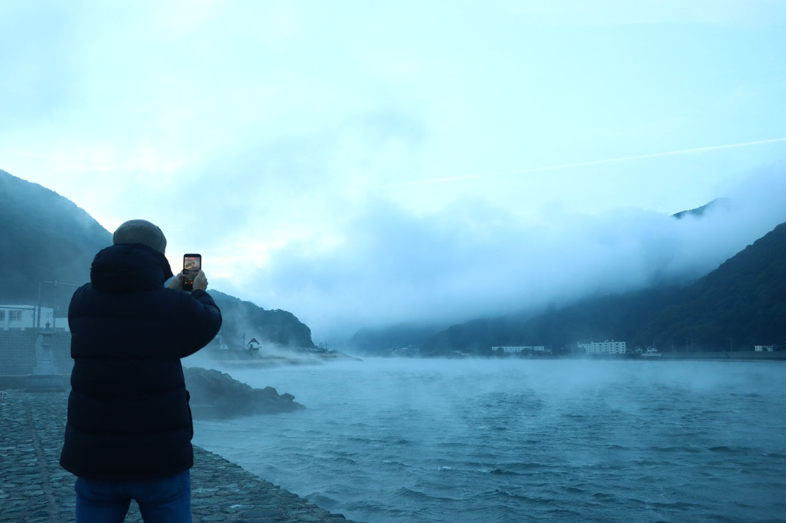
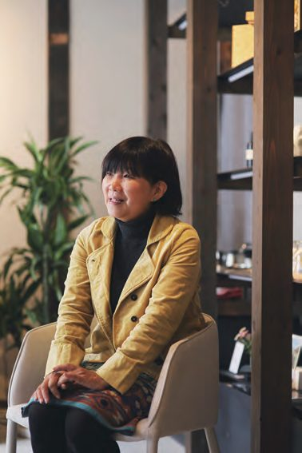

受付中1/31 撮影の締切賞金あり
長浜の四季を撮って、フォトコンテストに出す
肱川あらし・自然の風景・名所・行事など「長浜の四季」を撮って応募します。入った写真は、まちのPRに使われます。
申し込む肱川あらし実行委員会のページが開きます
自分にできることは？
このページの中
空き家の掃除から、まちは生き返りました。
2017年、取り壊しが進んでいた大洲の城下町で、地域の若者たちが空き家の掃除と障子の張り替えを始めました。人の出入りがあるだけで建物は傷みにくくなり、そのあいだに使い道が見つかって、いまでは39棟が使われています。
それでも、守りたい建物と風景の数に対して、手はいつも足りていません。大洲に来て手を貸すことも、遠くから品を選ぶことも、このまちを支える力になります。

大洲に来て手を貸す方法です。申し込みは、それぞれの募集元のページからできます。
肱川あらし・自然の風景・名所・行事など「長浜の四季」を撮って応募します。入った写真は、まちのPRに使われます。
申し込む肱川あらし実行委員会のページが開きます書架の整理・蔵書点検・朗読や読み聞かせ・図書館まわりの清掃・花壇の草引きや水やりなど。中学生から一般の方までどなたでも、都合のよい日に、できる範囲で。
申し込む大洲市立図書館のページが開きます大雨などの災害が起きたとき、片付けや泥出しの作業に加わるボランティアとして事前に登録します。肱川は何度も水害に遭ってきた川です。
申し込む社会福祉協議会の登録フォームが開きます今月から順に並べています。日程が出たら「いま参加できること」に移します。
例年 3〜4月に募集
「つなぐ棚田遺産」に選ばれた樫谷棚田の1区画のオーナーになり、田植えと稲刈りに加わります。地元だけでは維持が難しくなっている棚田です。
大洲市戒川・オーナー田 33,000円／トラスト会員 10,000円

例年 6〜8月
大洲城・盤泉荘・臥龍山荘と城下町を学び、まち歩きのガイドになる講座。初級から認定まで3段階です。
大洲の城下町・受講無料
例年 10月下旬
河川敷と街なかを清掃し、集めたごみを分類します。2025年（10月25日）は200人が清掃に参加し、120kgのごみを回収しました。
肱川緑地公園

例年 10月〜3月
冬の早朝、川霧が海へ吹き出す肱川あらしを撮影します。撮った写真は、上の長浜のフォトコンテストにも出せます。
坂本龍馬宿泊地 観光駐車場・無料
大洲カンパニーがこれまでに募集した手伝いです。次の募集も、だいたいこんな内容と規模です。

2024年12月・城下町（集合：まちの駅あさもや）
観光のまち歩きの道沿いにある大正期の古民家2棟を、これからの活用に向けて参加者で掃除しました。

2025年1月・城下町
同じ古民家の畳をはがし、現場を掃除しました。自己紹介とプロジェクトの説明のあとに作業、の順です。

2024年10月・肱川町名荷谷
耕作放棄地を自然農法でよみがえらせた田んぼで、酒米「松山三井」を刈って稲木に干しました。地酒づくりにつながるプロジェクトです。

2026年2月・肱川町山鳥坂・養老酒造
養老酒造で、出荷前の日本酒にラベルを貼る作業に加わりました。お礼は、自分で貼った1本です。

2024年10月・現地・オンライン
大正9年創業、令和4年に閉じた銭湯の使い道を、住民や関係者と話し合いました。オンラインからも参加できました。

2024年12月・長浜
長浜のプロジェクトの話を聞き、柑橘を収穫して試食しました。
泊まる、食べる、歩く、手を貸す。大洲で過ごす時間が、そのまま城下町と伝統芸能を支えています。
大洲に来られなくても、品を選ぶ・寄附する・支える会に入ることで応援できます。

冨永松栄堂
明治8年創業の菓子舗。五代目の冨永明佳さんが、大洲の郷土菓子を受け継いでいます。
公式の通販 ↗
OZU+（オオズプラス）
2021年、再生した町家に開いた店。大洲の繭やヒノキを使った品は、ふるさと納税のお礼の品で届きます。
ふるさと納税の窓口 ↗3,000円以上の寄附で、志ぐれや OZU+ の品、キャッスルステイのギフト券などのお礼の品が届きます。
申し込み窓口の一覧（大洲市）ふるさと納税の仕組みは「つながる制度」へ少額で応援できる仕組みを準備しています。整ったらこのLINEでお知らせします。
手伝いもお金も、どこに届いているかが見えるまちです。

出典：「大洲まちづくりブック」（2026年5月・キタ・マネジメント発行）、キタ・マネジメント「令和7年度実績報告」
2017年、取り壊しが進む城下町で、地域の若者たち（YATSUGI）が始めたのは空き家の清掃と空気の入れ替え、障子の張り替えでした。人の出入りがあるだけで、空き家の傷みは目に見えて遅くなる——誰にでもできる小さな手入れが建物の寿命を延ばし、そのあいだに活用の道筋がつくられて、いまの39棟の活用（うち歴史的建造物35棟）につながりました。
つまりこのまちでは、「手伝い」は雑用ではありません。まちの寿命を延ばす、実績のある手段です。そしてこの構図はいまも変わっていません。守りたい建物と風景の数に対して、手はいつも足りていません。
大洲では、お金の行き先が公開されています。くわしい数字は「まちづくりデータ」に。

出典：「大洲まちづくりブック」p.22（城泊の経費）・p.26（市内からの仕入れ）・p.28（ツアーの寄附）
「応援」というと寄付を思い浮かべるかもしれません。でも大洲では、泊まることも、買うことも、歩くことさえも応援になります。お金がどこへ流れるかが公開されているまちだからです。
大洲城キャッスルステイの経費は、63%が人件費・物件費、約2割（20%）が鎮縄神楽・御長柄行列など伝統芸能・伝統文化の継承に、約1割（11%）が文化財の使用料として大洲市に還元され、残る6%が利益です。コロナ禍で披露の機会が減った伝統芸能に、城泊が舞台と収入をつくりました。
城下町では、空き家・空きビル39棟（うち歴史的建造物35棟）がいま使われています。町家を再生した NIPPONIA HOTEL の客室も、その中にあります。
買うことも応援です。郷土菓子の志ぐれ、OZU+ のオーガニックタオル、土産物の数々。対象の17事業者は仕入れの47%を市内から調達していて、仕入れの半分近くが、まちの中で使われています。
ガイドツアー「OZU STORIES」は、収益の5%が町の保全を行う地域団体に寄付されます。再生の現場を歩いて学ぶこと自体が、次の再生の原資になります。
いちばん軽い応援は、ここにいることです。このLINEの友だちでいてくれること、配信をたまに読んでくれること。それ自体が、まちにとっては「見てくれている人がいる」という応援です。
出どころ：志ぐれの通販は冨永松栄堂公式サイト、OZU+ と冨永松栄堂の紹介は「大洲まちづくりブック」（2026年5月・キタ・マネジメント発行）と Visit Ozu、ふるさと納税は大洲市ホームページ（2026年8月6日更新）とJALふるさと納税の大洲市のお礼の品（2026年10月2日確認）、棚田は樫谷棚田保存会（令和8年度）より。募集は、それぞれの募集元の案内で10月26日に確認。YATSUGIの活動とアワードは「大洲まちづくりブック」（p.25）より。写真：キタ・マネジメント／大洲カンパニー公式サイト、「大洲まちづくりブック」、OZU 555 PROJECT 写真共有フォルダ（キタ・マネジメント 三好撮影）より。